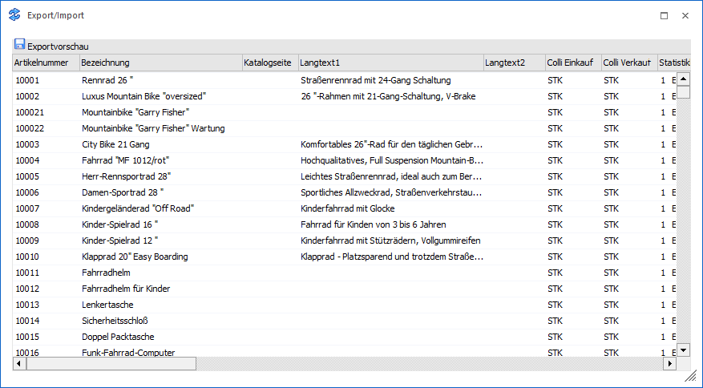
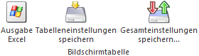

Wenn bei einem Export im Export/Import der Button "Exportvorschau" angewählt wird, dann wird der Bereich "Exportvorschau" geöffnet. In diesem ist ersichtlich, welche Datensätze exportiert werden.
Hinweis
Die Spalten der Tabelle sind abhängig von der verwendeten Vorlage.

Die Datensätze in der Tabelle sind abhängig von der zuvor getätigten Selektion und der verwendeten Vorlage. Der Export selbst kann durch Anwahl des Buttons "Ok" bzw. der Taste F5 gestartet werden.
Tabellenbuttons

Ø Ausgabe Excel
Durch Anwahl des Buttons "Ausgabe Excel" wird der Inhalt der Tabelle an Microsoft Excel übergeben.
Ø Tabelleneinstellungen speichern
Die Spalten einer Tabelle können grundsätzlich an beliebige Positionen verschoben, bzw. in der Breite entsprechend angepasst werden. Durch Anwahl des Buttons "Tabelleneinstellungen speichern" werden die Einstellungen benutzerspezifisch gespeichert und bei dem nächsten Aufruf des Programmpunktes wieder vorgeschlagen.
Ø Gesamteinstellungen speichern
Im Gegensatz zu "Tabelleneinstellungen speichern" können mit "Gesamteinstellungen speichern" mehrere Tabellenaufbauten gespeichert und nach Wunsch geladen werden. Zusätzlich werden Sonderfunktionen der Tabelle (z.B. "Spalte gruppieren") ebenfalls bei der Speicherung bedacht.
Buttons
Ø Ok
Durch Anwahl des Buttons "Ok" bzw. der Taste F5 wird der Export durchgeführt.
Ø Import (nur bei Import)
Mit Hilfe des Buttons "Import" im Prüfbereich (siehe auch Option "Sätze vor Import editieren") wird der Import durchgeführt.
Ø Ende
Durch Drücken des Buttons "Ende" bzw. der Taste ESC wird das Fenster geschlossen, alle Einstellungen verworfen und kein Export durchgeführt.
Ø Eingaben initialisieren (nicht bei Exportvorschau)
Durch Anklicken dieses Buttons werden alle getätigten Export-Einstellungen verworfen, wodurch eine neue Selektion durchgeführt werden kann.
Ø Exportvorschau (nicht bei Exportvorschau)
Durch Drücken des Buttons "Exportvorschau" werden in einem neuen Fenster die Datensätze, welche auf Grund der vorgenommenen Einstellungen exportiert werden würden, angezeigt.
Hinweis
Eine Bearbeitung der Datensätze ist nicht möglich.
Ø Zurück
Befindet man sich in der Exportvorschau oder der Importvorschau, so kann durch Anwahl des Buttons "Zurück" wieder in das Hauptfenster des EXIMs zurückgewechselt werden.